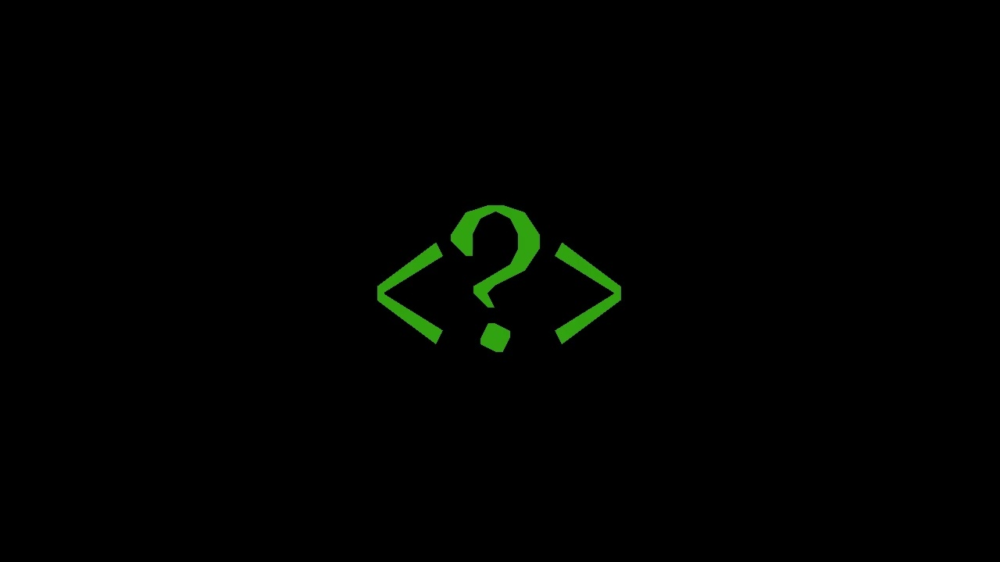

Entre um labirinto de dúvida os caminhos se entrelaçam_

Eu sou aquilo que não pode ser questionada. Eu sou aquilo que as pessoas dizem procurar. Eu sou aquilo que as pessoas costumam dizer que sabem. Eu sou aquilo que não existe em totalide mesmo sendo supostamente universal, o que eu sou?